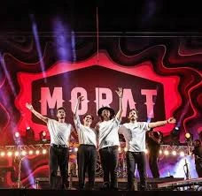

Historia de Morat
Conoce los orígenes, la trayectoria y los miembros de una de las bandas más queridas del pop rock en español.
¿Cómo nació Morat?
Morat nació en Bogotá, Colombia en el año 2011, cuando cuatro amigos del colegio decidieron unirse para hacer música juntos. El nombre de la banda viene del apellido de uno de sus miembros, Juan Pablo Isaza, cuyo segundo apellido es Morat.
Desde sus inicios, el grupo se caracterizó por letras honestas y emotivas que hablan de amor, desamor y las emociones cotidianas. Su sonido mezcla el pop con el rock y las raíces del folk latinoamericano, creando un estilo único que conecta con millones de personas en todo el mundo.
Comenzaron tocando en pequeños locales de Bogotá hasta que su música llegó a España, donde lograron su gran despegue internacional firmando con Sony Music y publicando su primer álbum en 2016.

Los miembros

Juan Pablo Isaza
Voz y guitarraUno de los fundadores del grupo y principal compositor de las letras. Su voz es el sello más reconocible de Morat. Nacido en Bogotá, estudió música desde pequeño y es el alma creativa detrás de muchas de sus canciones.
Quieres Conocerlos
Juan Felipe Samper
Guitarra y vozGuitarrista principal de la banda y uno de sus compositores. Su estilo de guitarra acústica define el sonido característico de Morat. Es conocido por su energía en el escenario y su gran conexión con el público.
Quieres Conocerlos
Simón Vargas
BateríaEl motor rítmico de la banda. Simón aporta la energía percusiva que hace bailar a los fans en cada concierto. Su estilo dinámico y preciso es fundamental para el sonido en vivo del grupo.
Quieres Conocerlos
Martín Vargas
Bajo y vozBajista de la banda y hermano de Simón. Martín es el pilar armónico del grupo, y su voz complementa perfectamente las armonías vocales de Morat. Su carisma lo hace uno de los favoritos del público.
Quieres ConocerlosTrayectoria
Formación en Bogotá
a banda se forma en Bogotá (Colombia) por Juan Pablo Isaza, Juan Pablo Villamil, Simón Vargas y Martín Vargas (este último sustituido posteriormente por Martín Vargas Morales — en realidad Simón y Martín son hermanos). Desde el inicio componen sus propias canciones con influencia folk y pop.
Salto a la fama
Se dan a conocer internacionalmente con el éxito Mi Nuevo Vicio, en colaboración con Paulina Rubio. Esta canción marca su entrada fuerte en España y Latinoamérica..
Primer álbum: Sobre El Amor Y sus efectos secundarios
Lanzan su primer disco con Universal Music Group (no Sony Music).
Incluye grandes éxitos como:
Cómo te atreves
Cuánto me duele
Este álbum los consolida como una de las bandas emergentes más importantes del pop en español.
Colaboración con Juanes
Colaboran con el legendario Juanes en la canción "Besos En Guerra", que se convierte en uno de sus mayores éxitos y rompe récords en plataformas de streaming.
Segundo álbum: Balas perdidas
(No “Himno de los pacientes”, ese es un sencillo, no un álbum).Incluye temas como:
Cuando nadie ve
Presiento
Realizan giras internacionales por Europa y América, consolidando su popularidad.
Tercer álbum: ¿A dónde vamos?
Este trabajo muestra evolución en su sonido y contiene canciones como:
No se va
París.
Consolidación internacional
Continúan lanzando sencillos, colaboraciones y giras globales con gran éxito, posicionándose como una de las bandas más influyentes del pop latino contemporáneo.